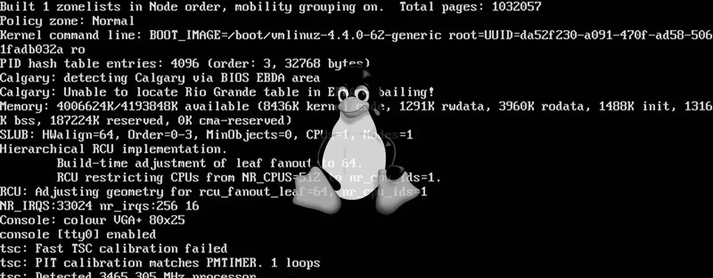
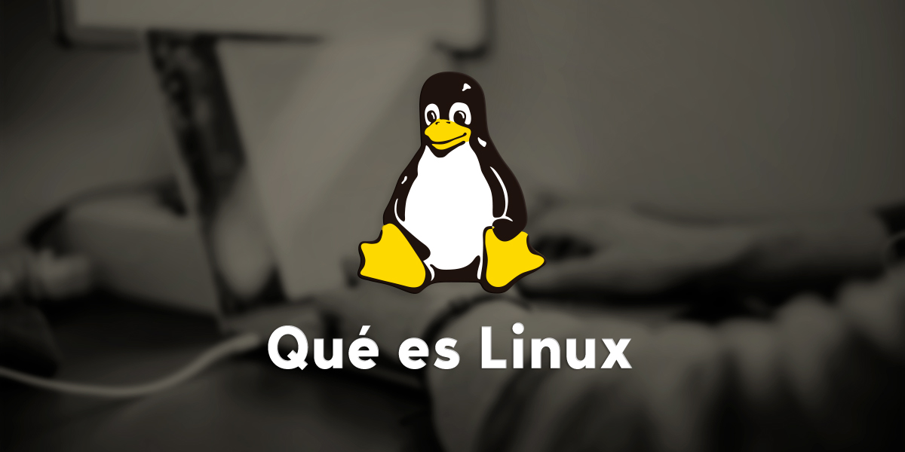
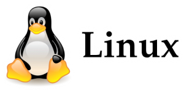

Linux
linux es uno de los sistemas operativos mas usados desde su creacion.Linux es un sistema operativo semejante a Unix, de código abierto y desarrollado por una comunidad, para computadoras, servidores, mainframes, dispositivos móviles y dispositivos embebidos.
Historia de Linux
Aunque la historia de Linux se comienza a escribir un poco más tarde, sus orígenes nos hacen remontar hasta principios de los años 80, cuando Richard Stallman, inició el Proyecto GNU con el propósito de crear un sistema operativo similar y compatible con UNIX. En el año 1985, se creó
la Fundación del Software Libre y se desarrolló la Licencia pública general de GNU para tener un marco legal que permitiera difundir libremente este software. Posteriormente, en 1991, fue Linus Torvalds, un estudiante de informática de 23 años de la Universidad de Helsinki, quien propone hacer un sistema operativo que se comporte como UNIX pero que, además, funcione sobre cualquier ordenador. En este momento, el propio Torvalds estableció como requisito mínimo que el ordenador tuviera un procesador i386.

El principal objetivo de este estudiante era crear el núcleo del sistema operativo que fuese totalmente compatible con UNIX y que, de esta manera, permitiese ejecutar todos los programas gratuitos compatibles con UNIX y desarrollador por la Free Software Foundation que vienen con licencia GNU. Para el desarrollo de este núcleo, Torvalds se inspiró en Minix, una versión reducida de UNIX. Pocos meses después, a finales de agosto de 1991, Torvalds ya contaba con la versión 0.01 de Linux, pero como todavía era algo muy básico y con escasa funcionalidad, decidió seguir desarrollando lo que sería la versión 0.02, que vio la luz en el mes de octubre de ese mismo año y que ya era capad de
ejecutar dos herramientas básicas de GNU, el intérprete de órdenes (bash) y el compilador de C.
El joven siguió trabajando en el desarrollo del sistema operativo y tras la versión 0.03, el gran apoyo de
otras personas que empezaron a participar con Linus en el desarrollo, hizo que se saltase rápidamente hasta la versión 0.1. Año y medio después, en diciembre de 1993, nacía la versión de Linux 1.0 y la base de este sistema operativo de código abierto que durante el paso de los años ha ido creciendo hasta nuestros días con el apoyo de todos y cada uno de los desarrolladores que han ido aportando su granito de arena.
¿Qué es Linux?
Linux es un sistema operativo completamente libre y, por lo tanto, gratuito. Es un sistema operativo que podemos utilizar en cualquier ordenador sin tener que pagar nada por él, sin coste y de forma totalmente legal sin necesidad de descargarlo pirata a través de Internet. Un producto que a diferencia de Windows o macOS no es propiedad de una compañía, de ahí su gratuidad, sino de un gran número de compañías o personas que contribuyen con su desarrollo y van creando sus propias distribuciones Linux. A diferencia de otros sistemas operativos populares como Windows o MacOS, Linux es altamente personalizable y configurable. Existen muchas distribuciones de Linux, cada una diseñada para satisfacer las necesidades específicas de diferentes usuarios. Además, Linux se utiliza en una amplia variedad de dispositivos, desde servidores y supercomputadoras hasta teléfonos móviles y dispositivos IoT.
Distribuciones De Linux
Una distribución Linux (GNU/Linux) (coloquial y abreviadamente llamada distro) es una distribución de software basada en el núcleo Linux, y a menudo, un Sistema de gestión de paquetes que incluye determinados paquetes de software, para satisfacer las necesidades de un grupo específico de usuarios, dando así origen a ediciones domésticas, empresariales y para servidores. Por lo general están compuestas, total o mayoritariamente, de software libre, aunque a menudo incorporan aplicaciones o controladores propietarios. Además del núcleo Linux, las distribuciones incluyen habitualmente las bibliotecas y herramientas del proyecto GNU y el sistema de ventanas X Window System. Dependiendo del tipo de usuarios a los que la distribución esté dirigida se incluye también otro tipo de software como procesadores de texto, hoja de cálculo, reproductores multimedia, herramientas administrativas, etc. En el caso de incluir paquetes de código del proyecto GNU, se denomina distribución GNU/Linux. Existen distribuciones que están soportadas comercialmente, como Fedora (Red Hat), openSUSE (SUSE) y Ubuntu (Canonical Ltd.); distribuciones mantenidas por la comunidad, como Debian, Arch Linux y Gentoo; y distribuciones que no están relacionadas con ninguna empresa o comunidad, como es el caso de Slackware.
Logo de Linux
¿Quien es Linux Torvalds?
Linus Benedict Torvalds (Helsinki, Finlandia, 28 de diciembre de 1969) es un ingeniero de software finlandés-estadounidense,conocido por iniciar y mantener el desarrollo del kernel Linux, basándose en el sistema operativo libre Minix creado por Andrew S. Tanenbaum y en algunas herramientas, varias utilidades y los compiladores desarrollados por el proyecto GNU. Actualmente es responsable de la coordinación del proyecto. También ha desarrollado el software de control de versiones Git.

Historia
-Inicios:
Nacido en Helsinki, Finlandia, el 28 de diciembre de 1969. Sus padres tomaron su nombre de Linus Carl Pauling (estadounidense, Premio Nobel de Química 1954). Comenzó sus andanzas informáticas a los 11 años cuando su abuelo, un matemático estadístico de la Universidad, compró uno de los primeros microordenadores Commodore en 1980 y le pidió ayuda para usarlo.
-Estudios:
En 1988 Linus es admitido en la Universidad de Helsinki, donde se gradúa con el grado de Máster en Ciencias de la computación. Ese mismo año el profesor Andrew S. Tannenbaum saca a la luz el S.O. Minix con propósitos didácticos. Dos años después, en 1990, Torvalds empieza a aprender el lenguaje de programación C en su universidad. A finales de los años 80 tomó contacto con los computadores IBM, PC y en 1991 adquirió una computadora con procesador modelo 80386 de Intel. A la edad de 21 años, con 5 años de experiencia programando (en lenguaje de programación C), ya conocía lo suficiente del sistema operativo Minix como para tomar prestadas algunas ideas y empezar un proyecto personal. Basándose en Design of the Unix Operating System, publicado por Maurice J. Bach en 1986, crearía una implementación que ejecutará cualquier tipo de programa, pero sobre una arquitectura de ordenadores compatibles, IBM/PC. Este proyecto personal desembocó el 5 de octubre de 1991 con el anuncio[1] de la primera versión de Linux capaz de ejecutar BASH (Bourne Again Shell) y el compilador conocido como GCC (GNU Compiler Collection). En enero de 1992 se adoptó la Licencia Pública General (GPL) para Linux. Ésta añade libertades de uso a Linux totalmente opuestas a las del software propietario, permitiendo su modificación, redistribución, copia y uso ilimitado. Este modelo de licencia facilita lo que es conocido como el modelo de desarrollo de bazar, que ha dado estabilidad y funcionalidad sin precedentes a este sistema operativo. En 1997 Linus Torvalds recibe un premio de la Fundación Nokia y Lifetime Achievement Award at Uniforum Pictures. Ese mismo año finaliza los estudios superiores (1988 - 1997) tras una década como estudiante e investigador en la Universidad de Helsinki, coordinando el desarrollo del núcleo del sistema operativo desde 1992. Torvalds trabajó en Transmeta desde febrero de 1997 hasta junio de 2003.
-Actualidad:
Actualmente trabaja para el Open Source Development Labs en Beaverton, Oregón. Solo el 2% del código del Linux actual está escrito por él, pero en su persona sigue descansando la paternidad de este núcleo del sistema operativo. Torvalds posee la marca registrada "Linux"y supervisa el uso de la marca a través de la organización sin ánimo de lucro Linux International.
-Creacion de Linux:
En Finlandia, Linus Torvalds, por entonces estudiante de Ciencias de la Computación de la Universidad de Helsinki, decidió realizar la cuantiosa inversión de 3500 dólares para adquirir un nuevo PC 386 (33 Mhz, 4MB de RAM; una de las más avanzadas de su época). El pago lo realizaría a plazos, pues no disponía de tal cantidad de dinero en efectivo. Normalmente, lo utilizaba para acceder a la red de su universidad, pero debido a que no le gustaba el sistema operativo con el cual trabajaba, Minix, decidió crear uno él mismo. Decidió aprovechar esta oportunidad para realizar un programa a bajo nivel prescindiendo de Minix. En los primeros intentos consiguió arrancar el ordenador y ejecutar dos procesos que mostraban “AAAAABBBBB ”. Uno lo utilizaría para leer desde el módem y escribir en la pantalla, mientras que el otro escribiría al módem y leería desde el teclado. Inicialmente, el programa arrancaba desde un disquete. La siguiente necesidad que tuvo fue la de poder descargar y subir archivos de su universidad, pero para implementar eso en su emulador era necesario crear un controlador de disco. Así que después de un trabajo continuo y duro creó un controlador compatible con el sistema de ficheros de Minix. En ese momento se percató que estaba creando algo más que un simple emulador de terminal, así que, descontento con su sistema Minix, emprendió la aventura de crear un sistema operativo partiendo de cero. De forma privada, Linus nombraba “Linux” a su nuevo sistema, pero cuando decidió hacer una presentación pública (pues ya era capaz de mostrar una shell y ejecutar el compilador gcc) pensó que era demasiado egocéntrico llamarlo así y propuso llamarlo Freax, aunque después se le siguió conociendo Linux. Después de anunciar el 25 de agosto de 1991 su intención de seguir desarrollando su sistema para construir un reemplazo de Minix, el 17 de septiembre de 1991 sube al servidor de FTP proporcionado por su universidad la versión 0.01 de Linux con 10.000 líneas de código (en la actualidad tiene más de 10 millones). A partir de ese momento Linux empezó a evolucionar rápidamente.
para mas información visitar la pagina de wikipedia